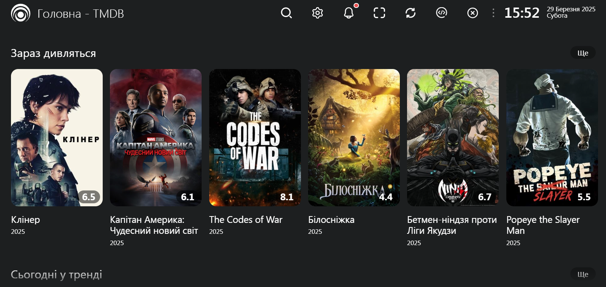

🎬 Lampac by DoLadu
Приватна українська інстанція Lampac з фільмами в 4К якості.

🚪 Отримати доступ
🤖 Завантажити для Android (.apk)
📺 Завантажити для Samsung Orsay (.zip)
📺 Завантажити для Samsung Tizen (.wgt)
🎥 Завантажити для Media Station X
🌍 Відкрити у браузері
doladu.net.ua